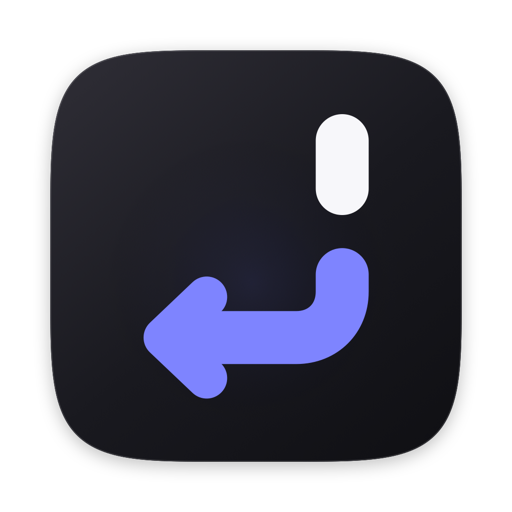
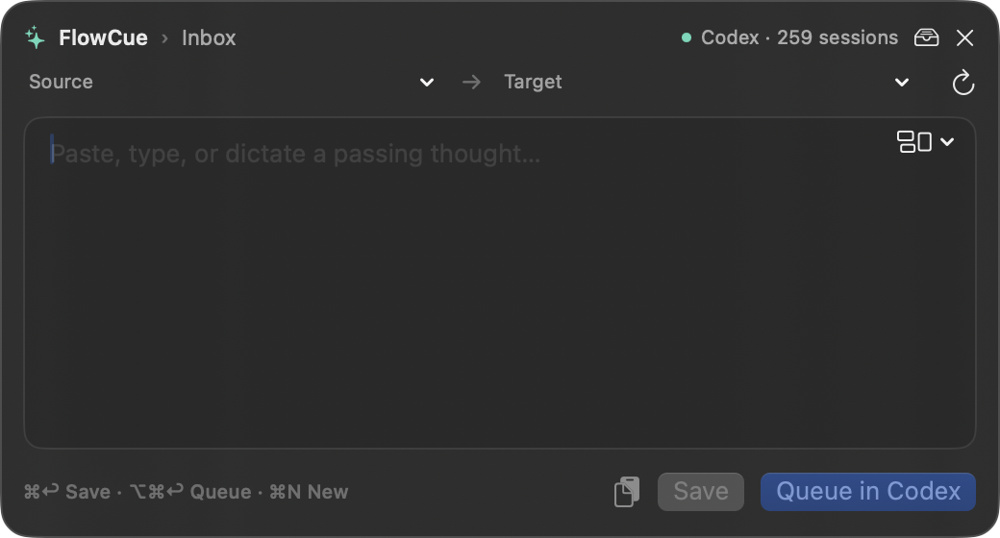
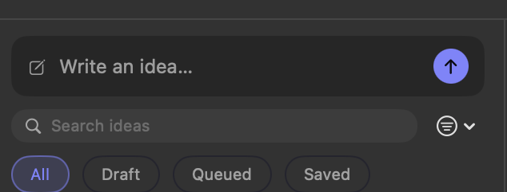
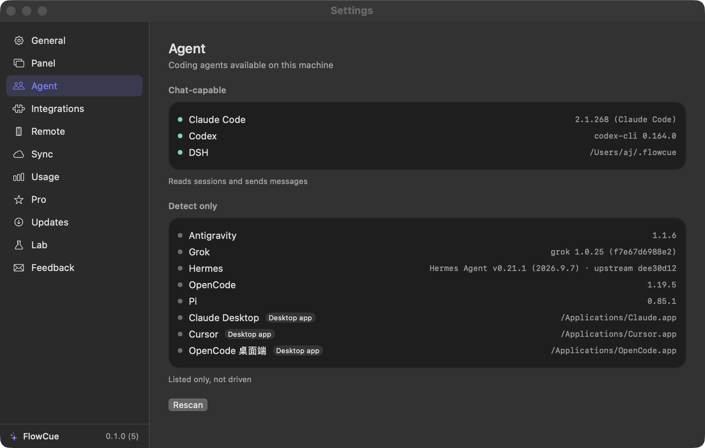

FlowCueWrite the thought before it disappears. FlowCue keeps it in a quiet inbox until you decide which coding agent gets it — Codex, Claude Code, or whatever you install next.

⌃⌥Space over any app. One line, then back to work.
Every idea lands in one inbox, with a status you can trust.
Queue it to Codex or Claude Code when it's actually ready.
Carry the same inbox on your iPhone, paired over your LAN.
The floating panel sits above whatever you're doing. Write, save with ⌘↩, and it's gone until you need it.
Three layouts for three moods: columns when you're sorting, a bottom composer when you're chatting, a sidebar when the list gets long.

FlowCue finds what's installed on this Mac and reads its sessions — Codex and Claude Code today, more as adapters land.

No account, no analytics SDK, no server holding your text. Ideas live in a local database.
It opens ~/.claude and ~/.codex to show sessions. It does not edit your configuration.
4.7 MB, runs in the menu bar, signed with Developer ID and notarized by Apple.
Codex, Claude Code and DSH can be read and messaged. OpenCode, Hermes, Pi, Grok, Antigravity, Cursor and the Claude desktop app are detected only. Nothing is promised before it's verified.
No. There is no FlowCue sign-in. Everything works offline except the optional update check and iCloud sync.
Reading your local agent files requires leaving the sandbox. FlowCue for Mac ships as a notarized DMG instead — the same route other agent tools take.
Over your local network with a pairing code shown on the Mac. No relay server sits in between.
Only what you turn on: optional iCloud sync, and the update check. Feedback is copied to your clipboard — you decide whether to send it. See the privacy page.